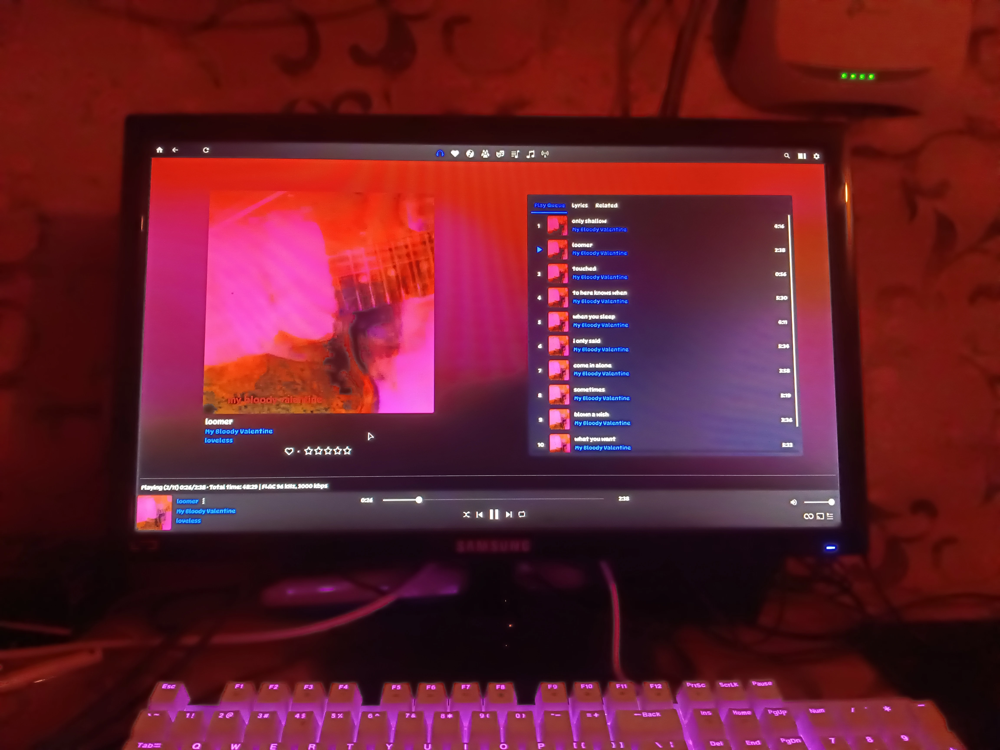
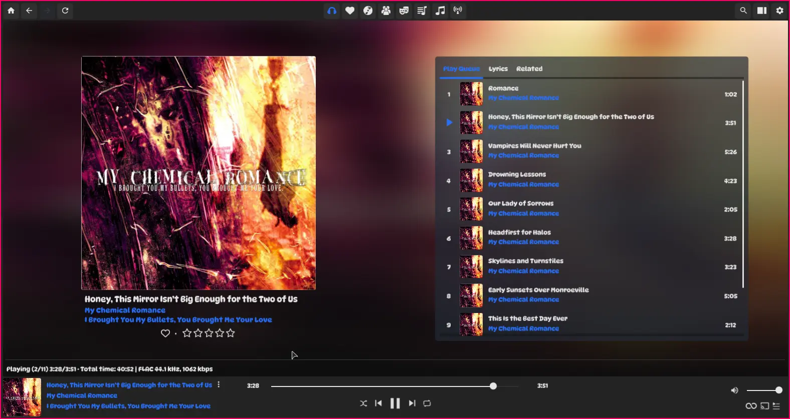
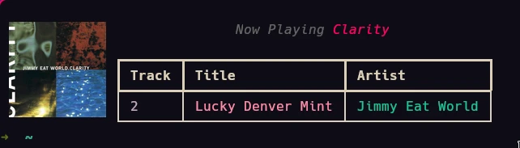
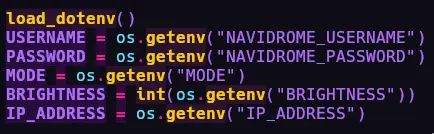
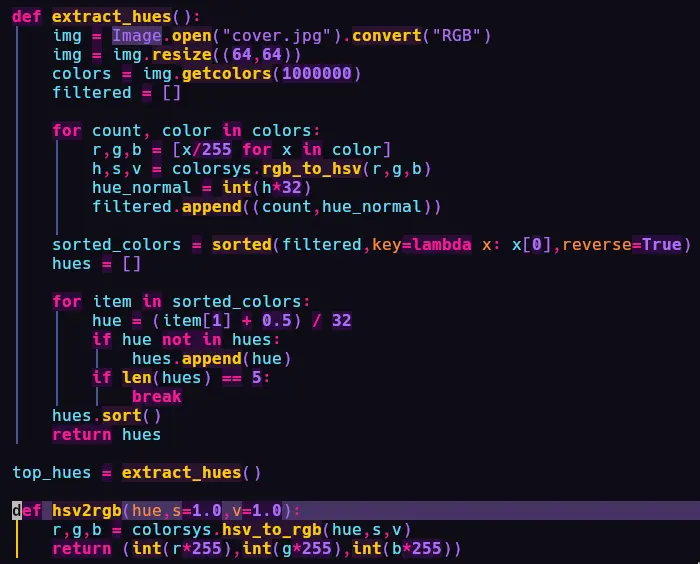
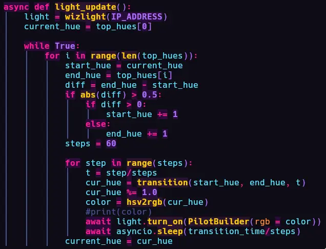
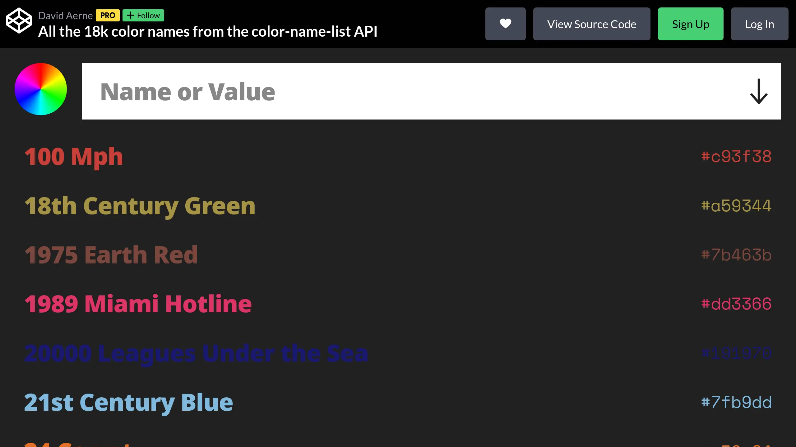

There's a way to do it better -
find it.
- Thomas A. Edison

Hello There

I have a huge collection of music and wanted to make the listening experience in Navidrome
better and more immersive. So I used a Philips WiZ light bulb and designed a system that smoothly transitions my
room lighting between the 5 most dominant colors of the currently playing album art to keep the experience
intimate and cohesive.
Somehow, that led me into the embedding model rabbithole. Soon enough, I had a
system where I could type a prompt like "soft relaxing bright" or "campfire" or "deep sea" or anything at all and
my room's lights would change to that. I learnt a lot of things like, why bigger model is not always better, etc.
Table of contents →
Navidrome
- I was checking my PS Vita's app store and came across this music streaming client, Nekodrome by NekoMimi which looked cooler than the Jellyfin client on PSV. That's when I thought I needed a Navidrome server. It took me some time to understand how it works and how I can make it truly mine.
- The web client was working, the PSV client was working, Android client was working. I soon discovered a problem where the metadata and artist tags were not perfect. And some albums missed Album Art. It reminded me of MusicBrainz Picard as I had seen it in GSOC organizations list. With Picard and Navidrome, one can essentially host their own music streaming service with no ads or low quality music.
- I carefully added Metadata to all my music using Picard and got Supersonic on my PC. I saw the blur in the background and thought, "How cool would it be if that background leaked outside the monitor...".

It's good that I'm immune to seizure-inducing graphics or else i'd be
(°o°:;)
- It was time to put my WiZ Light Bulb to some use and finally making a project other than, "Oh look, my room only has light when I am typing on my keyboard. This motivates me to type more and more". I setup pywizlight in a fresh virtual environment. I also checked how Navidrome's API works and played around with cURL a bit. I was able to pipe it through jq and get track name, etc and write a shell script that could do something like this below. Check out the code here.

The Lighting
- I used the
dotenvlibrary to setup the variables like so. There are 2 modes in the script. Mode 1 ends the lighting show after the current album stops playing . Whereas Mode 2 dynamically checks everytime album has changed and crossfades the colors. - Hues are extracted using pillow. First, the Album-Art image is reduced to
64x64. Then the colorspace is changed to theHSVformat. I intentionally reduced the hue resolution and cranked up saturation and brightness, so that I can get sharp colors instead of having to deal with 100 different shades of red. Now, I can have upto 32 colors as input.

32 colors here does not limit me to 32 light colors, I have a trick to get the full 16.7 million colors (^_-)
- Once we get the top 5 colors, we can use a simple for loop and go from lowest to highest (like
a gradient) of the 5 selected hues by adding small increments. While converting hues back to RGB (that's the
format pywizlight works with) I hardcoded the Saturation and Brightness values to
1.0 because I did not want the album art to control brightness. I have used
BRIGHTNESSin the .env file so that I can manually set the brightness or control it based on time of day or other external factors. Letting the album art decide the Brightness value is kind of like a missed opportunity in my opinion. - It takes 60 seconds to go from hue n to hue n + 1. pyqizlight uses
the asyncio library. Thanks to it, I was able to learn about non blocking loops, or else it would
have been like my Voice Assistant project where
everything was being blocked because it was single threaded.
And that's how I was able to get reactive lights based on currently playing album.


Embedding Model
- I realised I had one embedding model in Ollama I never used: nomic-embed-text. I looked around
duckduckgo for a while and came across color-names. It is a list of colors with the name of the
color being something a human would say, like the ones below. I knew this was perfect for semantic search.

- I tried using nomic-embed-text to generate embeddings, but it was taking a long time and it was on my PC from a very long time, so I searched ollama's model directory for newer and smaller models. I found a few that would fit my use case. all-minilm, and snowflake-arctic-embed and IBM's embedding model: Granite. I went on to benchmark some of the models.
- ok →
| Model | Time Taken | Quality (my opinion) | Notes | Results |
|---|---|---|---|---|
| granite:33m | 00:16:03 | linkedin 🧠📉 |
i would use rapidfuzz or pywal instead, like a cavemanTruth be told, it seems like this is better for RAG than creative tasks. Still very 🧠🪦 |
check here |
| all-minilm:22m | 00:09:52 | excellent | it's better than 33m variant, but feels robotic | check here |
| all-minilm:33m | 00:11:13 | good | no soul + a bit corpo | check here |
| snowflake-arctic-embed:22m | 00:08:07 | excellent | perfect model for this use case | check here |
| snowflake-arctic-embed:33m | 00:09:36 | good | loses character compared to smaller model | check here |
larger modelsnomic-embed-moe, bge-m3, mxbai-embed-large |
1-2 hours | bad | not really good for this use case |
NAnot gonna waste any more time |